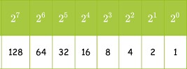
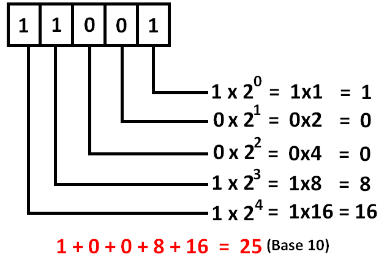
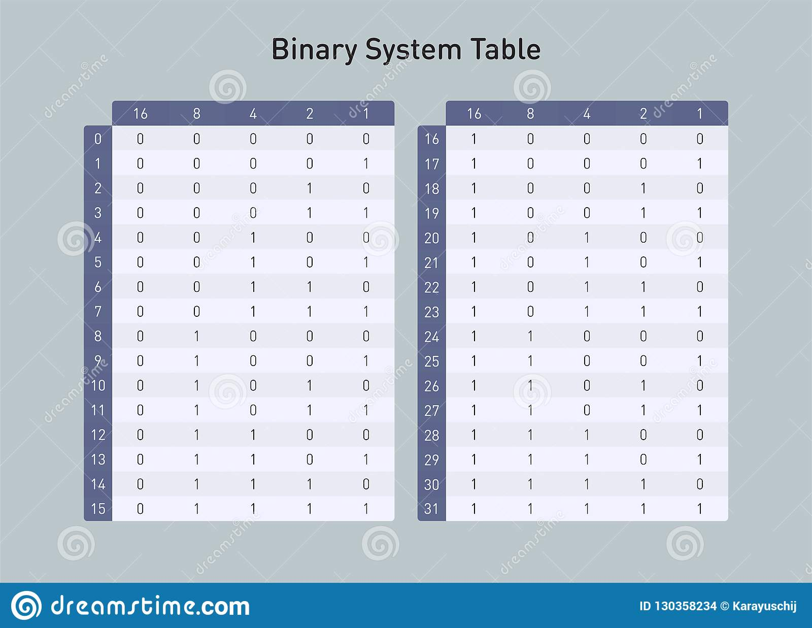

The decimal number system that we used everyday contains ten digits, 0 through 9 and the base of this system is 10. In the binary system, only 2 digits are used, namely 0 and 1. In order to convert from Binary to Decimal (base 10), one must know the positional values in the base two system. The positional values in a base 2 system are:

In order to change from binary to decimal, these steps can be followed:
Here's an example:
In this example, the binary 11001 is 25 in base 10.

Enter any binary number using 1-8 bits:
The Base 10 Value :